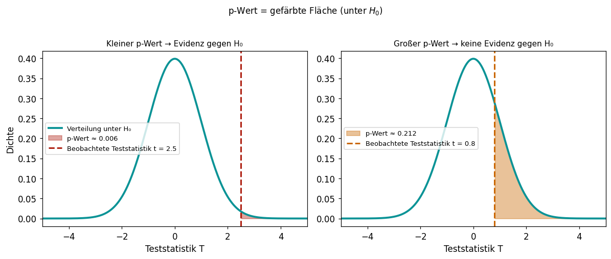
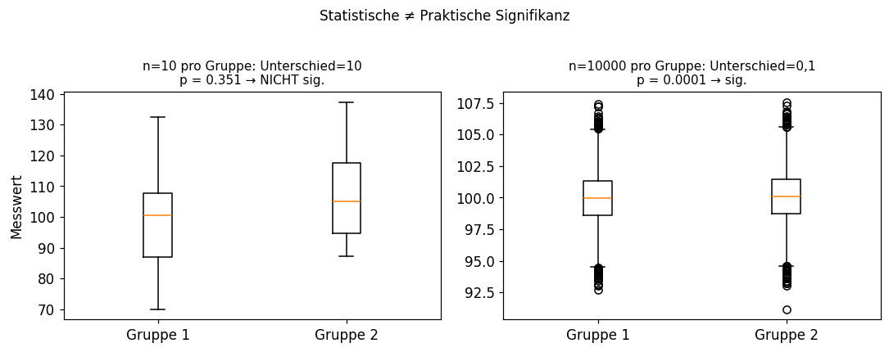

3.1 Statistische Signifikanz & p-Werte
Lernziele
Am Ende dieses Unterkapitels kannst du:
- die Begriffe Nullhypothese, Alternativhypothese und Signifikanzniveau erklären.
- Fehler 1. und 2. Art beschreiben und ihre Konsequenzen abwägen.
- einen p-Wert korrekt interpretieren – und häufige Missverständnisse vermeiden.
- den Unterschied zwischen statistischer und praktischer Signifikanz erläutern.
Das Problem
Angenommen, eine Pharmafirma behauptet, ihr neues Medikament sei in 60 % der Fälle wirksam. In einer Studie mit 40 Patienten zeigen 26 eine Verbesserung. Reicht das als Beweis?
Oder stell dir vor: Adélie-Pinguine hatten früher eine mittlere Schnabellänge von 38 mm. Unsere Stichprobe zeigt 38,8 mm. Ist das ein echter Unterschied, oder nur Zufall?
Statistische Hypothesentests geben uns ein formales Werkzeug, um solche Fragen zu beantworten – und dabei die Wahrscheinlichkeit für Fehlentscheidungen zu kontrollieren.
Nullhypothese und Alternativhypothese
Jeder statistische Test beginnt mit der Formulierung von zwei konkurrierenden Hypothesen:
TippWarum ist H_0 asymmetrisch?
Man kann H_0 verwerfen (mit kontrollierbarer Fehlerwahrscheinlichkeit), aber man kann H_0 nie “beweisen”. Ein Test kann nur zeigen: “Die Daten sind mit H_0 kaum vereinbar.” Deshalb formuliert man das, was man zeigen will, als H_1.
Beispiele
| Fragestellung | H_0 | H_1 |
|---|---|---|
| Hat sich die Schnabellänge erhöht? | \mu \leq 38 mm | \mu > 38 mm |
| Unterscheiden sich zwei Gruppen? | \mu_1 = \mu_2 | \mu_1 \neq \mu_2 |
| Ist das Medikament wirksamer? | p \leq 0{,}5 | p > 0{,}5 |
Einseitige Tests: H_1 hat eine Richtung (z.B. \mu > 38).
Zweiseitige Tests: H_1 hat keine Richtung (z.B. \mu \neq 38).
Fehler 1. und 2. Art
Bei einer Testentscheidung können zwei Arten von Fehlern auftreten:
| H_0 nicht verworfen | H_0 verworfen | |
|---|---|---|
| H_0 wahr | Richtige Entscheidung ✓ | Fehler 1. Art (α) |
| H_0 falsch | Fehler 2. Art (β) | Richtige Entscheidung ✓ |
VorsichtDas Dilemma
Macht man \alpha sehr klein (z.B. 0,001), wird der Fehler 1. Art selten – aber dann steigt der Fehler 2. Art. Es gibt keinen Test, der beide Fehler gleichzeitig minimiert.
In der Praxis: Man fixiert \alpha und wählt den Test mit der höchsten Trennschärfe (= Macht = 1-\beta, Wahrscheinlichkeit einen echten Effekt zu finden).
Die Teststatistik und der p-Wert
Das allgemeine Testprinzip
- Formuliere H_0 und H_1.
- Wähle ein Signifikanzniveau \alpha (z.B. 0,05).
- Berechne aus den Daten eine Teststatistik T (eine Zahl, die misst, wie weit die Daten von H_0 entfernt sind).
- Berechne den p-Wert = Wahrscheinlichkeit, eine mindestens so extreme Teststatistik zu beobachten, wenn H_0 wahr wäre.
- Entscheidung: Verwirf H_0, wenn p \leq \alpha.
Definition des p-Werts
Korrekte Interpretation des p-Werts
VorsichtHäufige Fehler bei der p-Wert-Interpretation
Falsch: “Der p-Wert ist die Wahrscheinlichkeit, dass H_0 wahr ist.”
Falsch: “p = 0,03 bedeutet: H_1 ist zu 97 % wahr.”
Falsch: “p < 0,05 bedeutet, der Effekt ist groß oder praktisch relevant.”
Richtig: “p ist die Wahrscheinlichkeit, bei gültiger H_0 eine mindestens so extreme Teststatistik zu beobachten wie die tatsächlich gemessene.”
Das Vorgehen: 5 Schritte
Standardablauf eines Hypothesentests:
- Hypothesen aufstellen: H_0 und H_1 formulieren.
- Signifikanzniveau festlegen: \alpha wählen (meist 0,05).
- Teststatistik berechnen: aus den Daten.
- p-Wert berechnen: Wahrscheinlichkeit unter H_0.
- Entscheidung treffen: Verwirf H_0, wenn p \leq \alpha.
Statistische vs. praktische Signifikanz
Ein häufiges Missverständnis: Ein statistisch signifikantes Ergebnis ist nicht automatisch praktisch relevant.

Links: n=10, Unterschied von 10 Einheiten – statistisch nicht signifikant (zu wenig Daten).
Rechts: n=10.000, Unterschied von 0,1 Einheiten – statistisch signifikant, aber praktisch irrelevant.
TippFaustregel
Ein statistisch signifikantes Ergebnis zeigt nur: Die Stichprobe ist groß genug, um einen Effekt nachzuweisen. Ob dieser Effekt praktisch wichtig ist, muss inhaltlich beurteilt werden – zum Beispiel durch die Effektgröße (Cohens d, relative Differenz etc.).
Zusammenfassung
| Begriff | Bedeutung |
|---|---|
| Nullhypothese H_0 | “Kein Effekt” – wird verworfen oder beibehalten |
| Alternativhypothese H_1 | Der vermutete Effekt |
| Signifikanzniveau \alpha | Maximale erlaubte Fehler-1.-Art-Wahrscheinlichkeit |
| Teststatistik | Zusammenfassung der Daten in eine Zahl |
| p-Wert | P(so extreme Daten | H_0 wahr) |
| Fehler 1. Art | H_0 verworfen, obwohl wahr (Rate ≤ α) |
| Fehler 2. Art | H_0 nicht verworfen, obwohl falsch (Rate = β) |
Wissensüberprüfung
---
primaryColor: '#0a9396'
shuffleQuestions: false
shuffleAnswers: true
---
### Welche Aussage beschreibt den p-Wert korrekt?
1. [x] Die Wahrscheinlichkeit, bei gültiger H₀ eine mindestens so extreme Teststatistik wie die beobachtete zu erhalten.
> Richtig! Der p-Wert misst, wie gut die Daten mit H₀ vereinbar sind.
1. [ ] Die Wahrscheinlichkeit, dass H₀ wahr ist.
1. [ ] Die Wahrscheinlichkeit, dass H₁ wahr ist.
1. [ ] Die Fehlerwahrscheinlichkeit des Tests.
### Ein p-Wert von 0,02 bei α = 0,05 bedeutet:
1. [ ] H₀ ist wahr mit 98% Wahrscheinlichkeit.
1. [x] H₀ wird verworfen, da p ≤ α. Die Daten liefern statistisch signifikante Evidenz gegen H₀.
> Richtig! p = 0,02 < 0,05 = α → H₀ wird verworfen.
1. [ ] H₁ ist mit 98% Wahrscheinlichkeit wahr.
1. [ ] Der Effekt ist praktisch bedeutsam.
### Was ist ein Fehler 1. Art?
1. [ ] H₀ wird nicht verworfen, obwohl sie falsch ist.
1. [x] H₀ wird verworfen, obwohl sie wahr ist (falscher Alarm).
> Richtig! Fehler 1. Art = false positive. Die Rate wird durch α kontrolliert.
1. [ ] Die Teststatistik ist falsch berechnet.
1. [ ] Der Stichprobenumfang ist zu klein.
### Du führst einen Test mit α = 0,05 durch und erhältst p = 0,049. Was ist die korrekte Entscheidung?
1. [x] H₀ wird verworfen (p < α).
> Richtig! Auch wenn der Unterschied knapp ist: p = 0,049 < 0,05 = α.
1. [ ] H₀ wird nicht verworfen, weil das Ergebnis zu knapp ist.
1. [ ] Man muss den Test mit mehr Daten wiederholen.
1. [ ] Die Entscheidung ist unklar.
### Eine Studie mit n = 50.000 Teilnehmern findet p = 0,001 für einen Unterschied von 0,2 Blutdruckpunkten. Was ist die richtige Interpretation?
1. [ ] Klinisch wichtiger Befund, sofortiger Handlungsbedarf.
1. [x] Statistisch signifikant, aber der Effekt (0,2 Punkte) ist so klein, dass er klinisch kaum relevant ist.
> Richtig! Bei sehr großem n werden winzige Unterschiede statistisch signifikant.
1. [ ] Die Studie ist fehlerhaft, weil p so klein ist.
1. [ ] Das Ergebnis ist nicht signifikant.